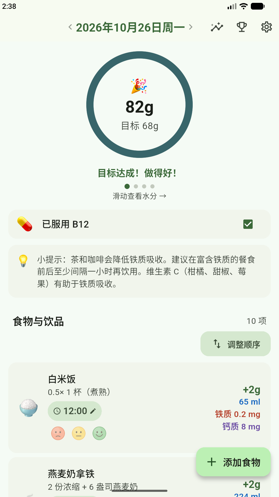
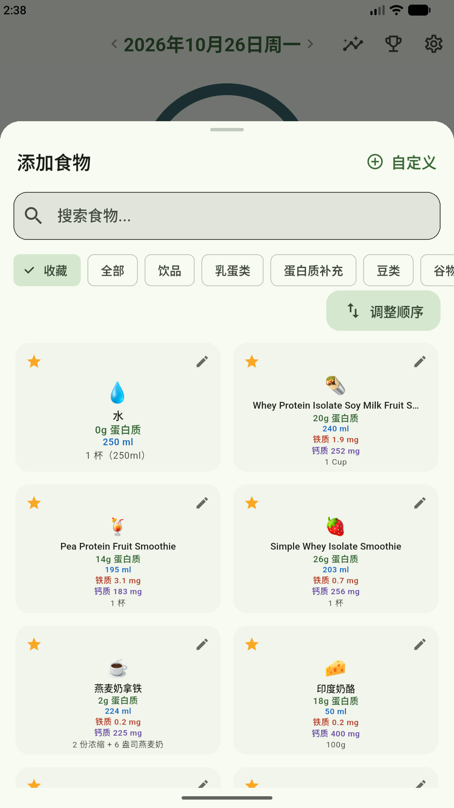
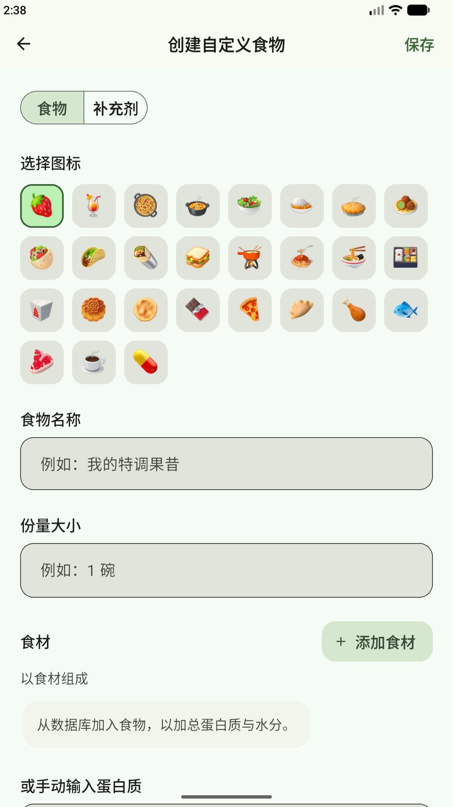
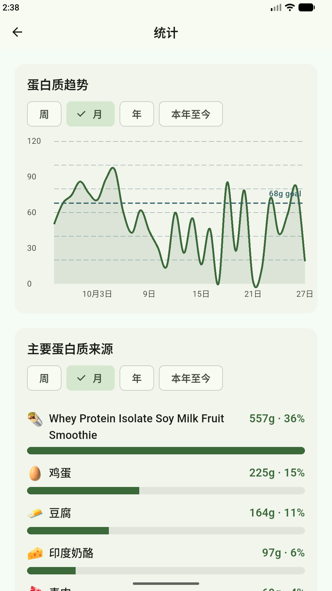
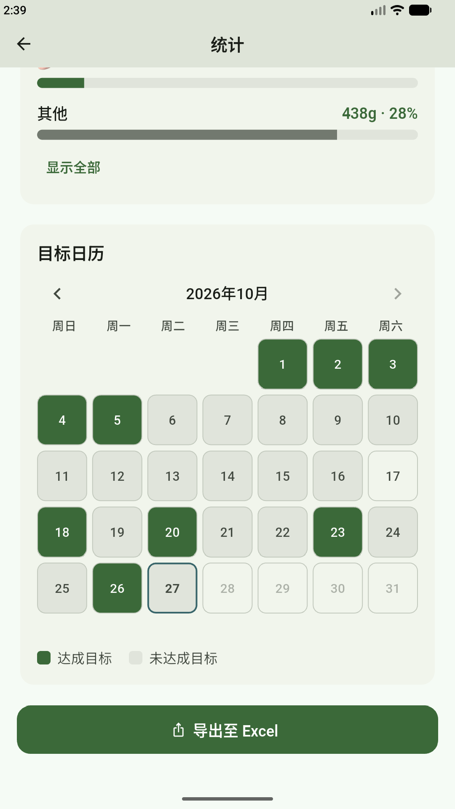
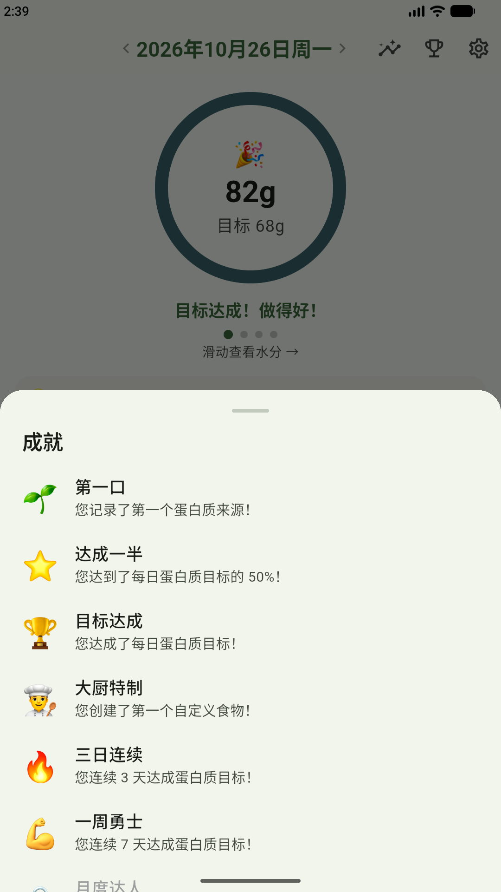

一眼掌握今天
随着进食逐渐填满的蛋白质环
主页以一个圆环显示您今天距离蛋白质目标的进度。每记录一项食物，总量就会增加；达成目标时，还会出现简短的庆祝画面。左右滑动圆环即可切换到水分、铁质与钙质，具体取决于您在“设置”中开启了哪些追踪项目。
- ✓ 自行设定每日蛋白质目标，例如营养师建议的摄入量
- ✓ 可选择追踪水分、铁质、钙质与维生素 B12
- ✓ 切换日期即可回顾之前的记录
- ✓ 记录每项食物的时间，也可以标记您有多喜欢它

一键记录
点一下就能添加食物
打开“添加食物”，找到您吃的食物，点一下就完成记录，它会马上计入进度环。POHPS 内置约 100 种常见素食，每种都标明每份的蛋白质、水分、铁质与钙质，让您在添加前就知道它能提供多少营养。
- ✓ 按名称搜索，或浏览“饮品”“乳蛋类”等分类
- ✓ 为常吃的食物加上星标，让它们优先显示在“收藏”中
- ✓ 食物列表会根据您的饮食类型调整：蛋奶素、全素、五辛素或五辛全素

您的专属食谱
用自己的食材创建自定义食物
有喜欢的果昔或家常食谱吗？只要创建一次，之后每次吃都能一键记录。从数据库挑选食材组合成新食物，POHPS 会自动加总蛋白质与水分；也可以根据营养成分表自行输入蛋白质。
- ✓ 想创建多少自定义食物与补充剂都可以
- ✓ 选择您一看就认得的图标、名称与份量
- ✓ 组合食材，或手动输入蛋白质数值

掌握趋势
看清蛋白质从哪里来的统计
“蛋白质趋势”图表将您每天的摄入量与目标线并列，哪几天不足一目了然。下方的“主要蛋白质来源”按贡献多少排列食物，并显示各自的克数与百分比。
- ✓ 可按周、月、年或本年至今查看
- ✓ 看看哪些食物最能帮助您达成目标
- ✓ 利用这些信息规划您的餐食

养成好习惯
每个月的目标日历
每天达成蛋白质目标，那一天在“目标日历”上就会变成绿色。一整个月的色块让您一眼看出连续达成的天数，空白处则提醒您接下来该加强的地方。
- ✓ 绿色代表达成目标，灰色代表未达成目标
- ✓ 切换月份，回顾过去的记录
- ✓ 将记录导出为 Excel 文件，自行保存或与营养师分享

庆祝每个里程碑
记录您每一步进展的成就
从记录第一项食物，到连续 30 天达成目标，成就会随着您的进展陆续解锁。随时点击主页上的奖杯图标，就能查看您获得的所有成就。
- ✓ “第一口”“达成一半”与“目标达成”记录您每天的进度
- ✓ 创建第一个自定义食物时，获得“大厨特制”
- ✓ 连续 3 天、7 天与 30 天达成目标的连续记录成就